Galería
📸 Próximamente fotos de las Fiestas 2026

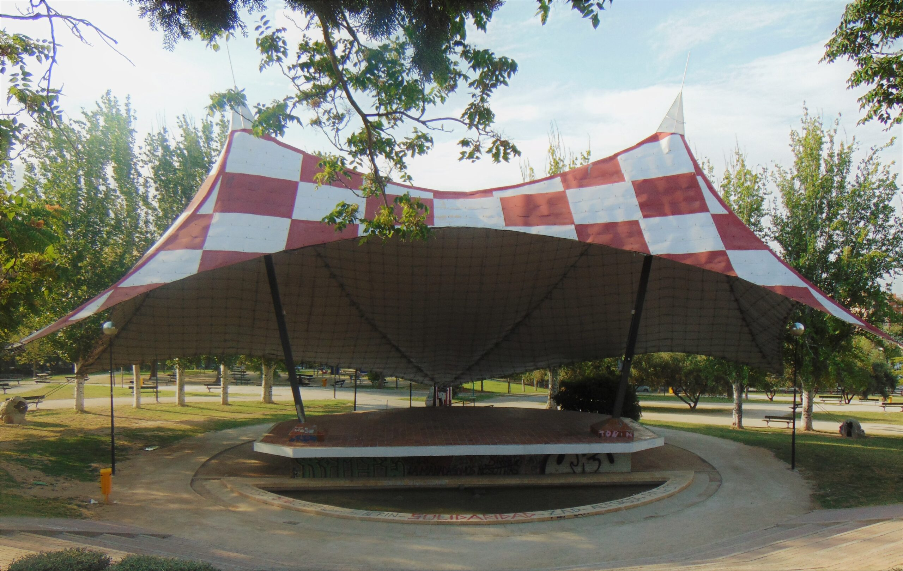
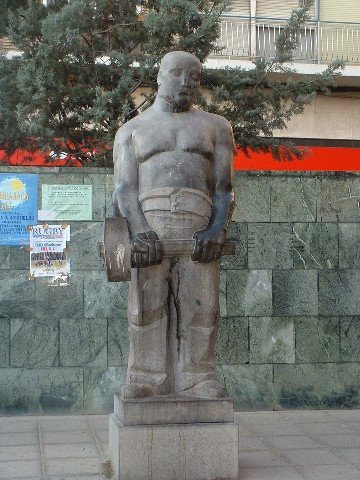
Cultura, tradición y vida en el barrio
Somos un grupo de chavales del barrio a los que muchos de vosotros ya conocéis desde hace años. Hemos crecido aquí, compartiendo calles, plazas y momentos que forman parte de nuestra vida y de nuestra identidad. Esta asociación ha nacido en 2026, pero nuestra historia viene de mucho antes. Durante años hemos estado presentes en la vida del barrio, participando, ayudando y disfrutando de muchas de sus tradiciones, especialmente de una de nuestras mayores pasiones: los cabezudos de Torrero. Pero nuestro compromiso va más allá. No solo queremos mantener viva esta tradición, sino también formar parte activa de la cultura del barrio. Nos mueve la ilusión de organizar, colaborar y aportar en todo tipo de actividades: fiestas populares, eventos culturales, actividades para jóvenes y mayores, y cualquier iniciativa que ayude a dar vida a nuestras calles. Para nosotros, los cabezudos son solo una parte de algo mucho más grande. Representan la unión, la alegría y el espíritu de barrio que queremos seguir construyendo entre todos. Queremos que las fiestas sigan siendo un punto de encuentro, donde vecinos de todas las edades puedan compartir, disfrutar y sentirse parte de algo común. Con la creación de esta asociación damos un paso adelante con la intención de implicarnos aún más, de trabajar en equipo y de colaborar con otras entidades, peñas y vecinos para que Torrero siga siendo un barrio lleno de vida, cultura y tradición. También queremos agradecer a todas las personas que durante años han mantenido vivas estas costumbres. Gracias a su esfuerzo hoy nosotros podemos continuar ese camino y aportar nuestro granito de arena para que no se pierda. Esto no es solo una asociación, es un grupo de gente con ganas de hacer barrio, de cuidar lo nuestro y de seguir creando recuerdos para las generaciones que vienen. Porque creemos en Torrero, en su gente y en todo lo que todavía está por venir.
Conoce a nuestros cabezudos:
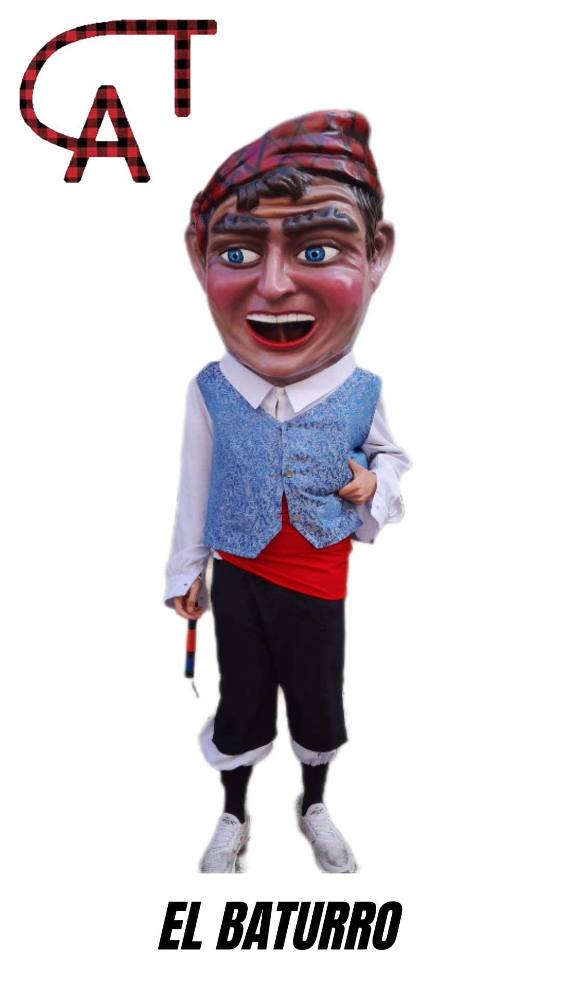
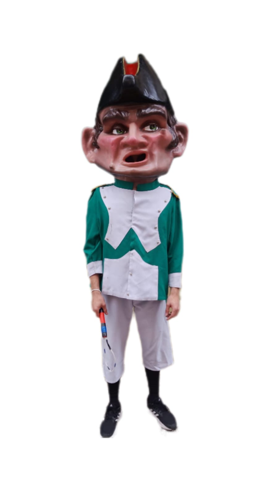
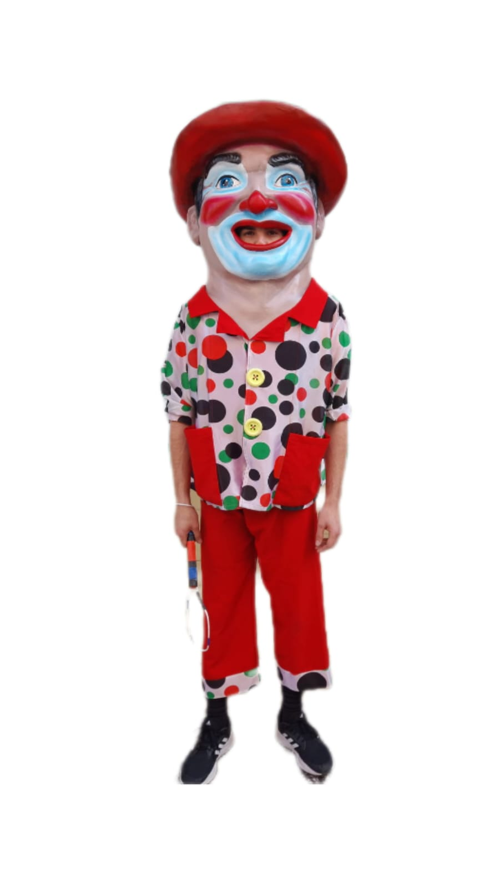
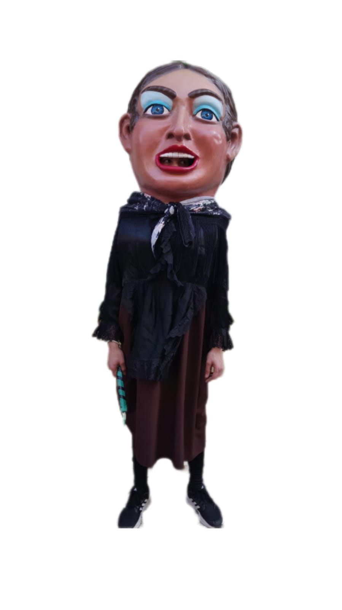
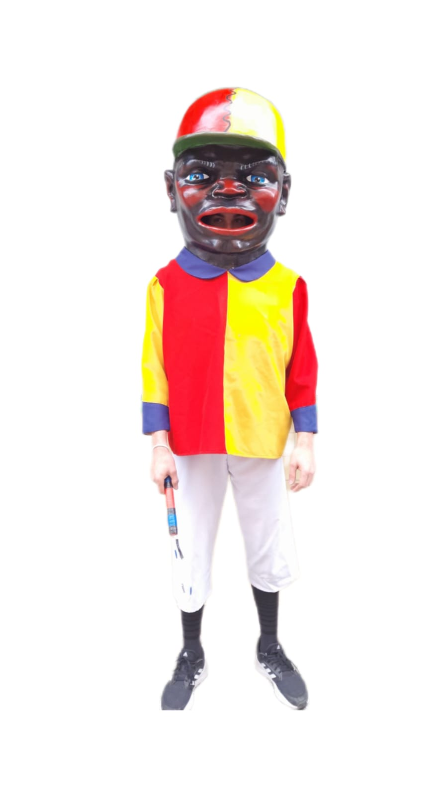
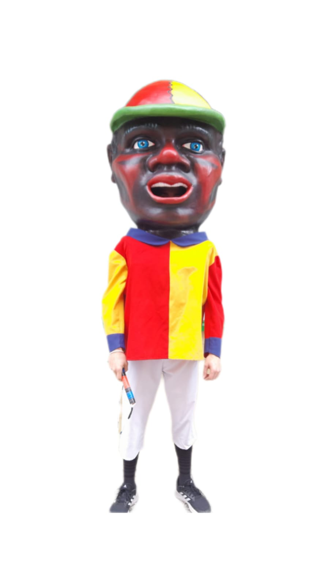
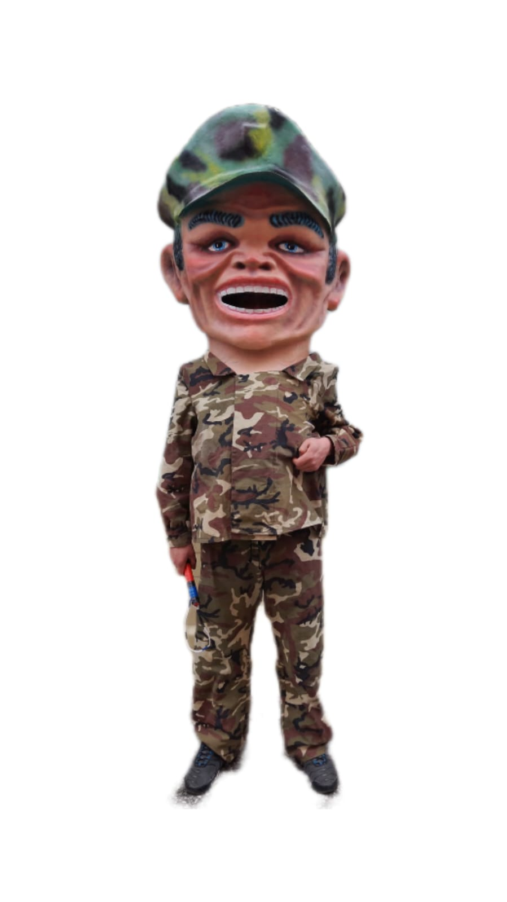
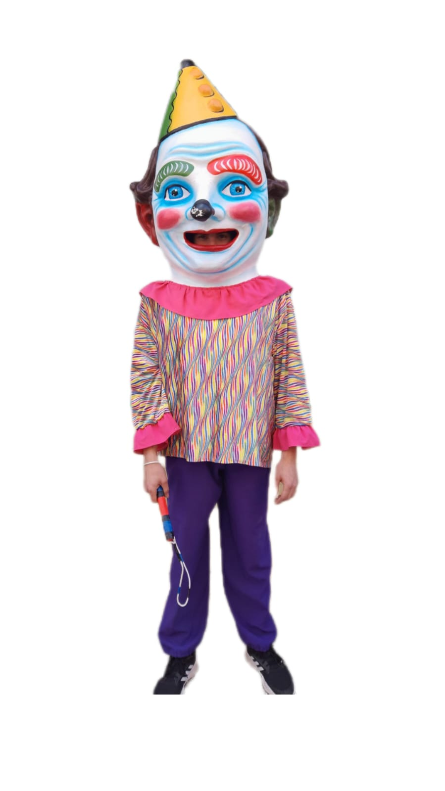
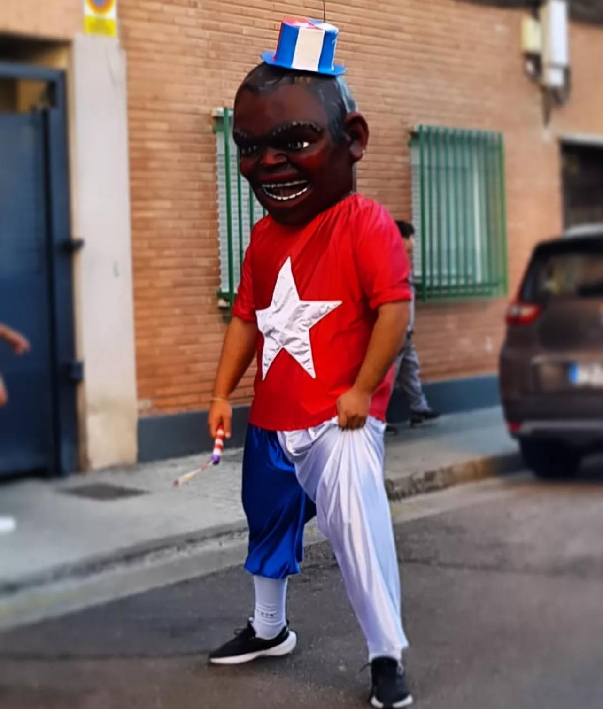
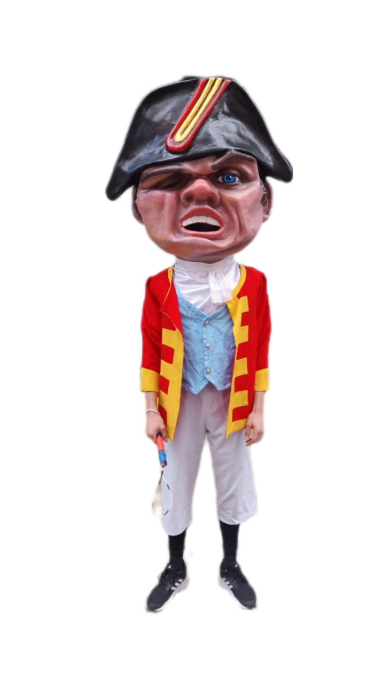
📸 Próximamente fotos de las Fiestas 2026


Correos de contacto:
📧 General: comisionfiestastorrero2026@gmail.com
📧 Secretaría: secretaria.accioncultural@gmail.com
📧 Tesorería: tesoreriaaccionculturaltorrero@gmail.com